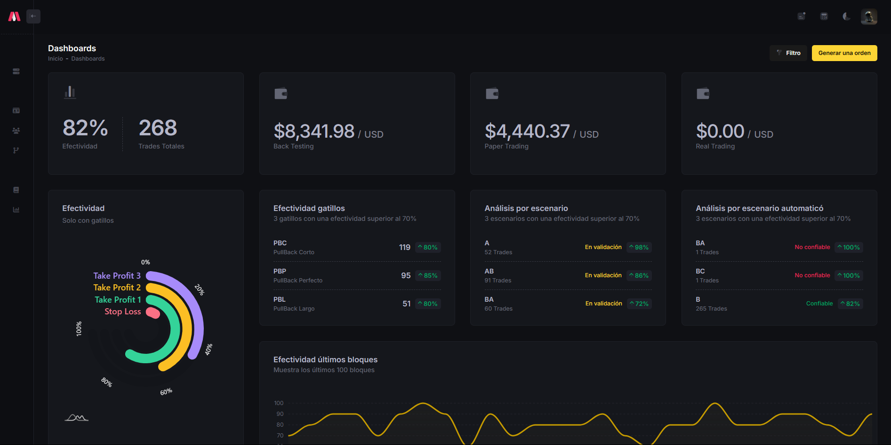
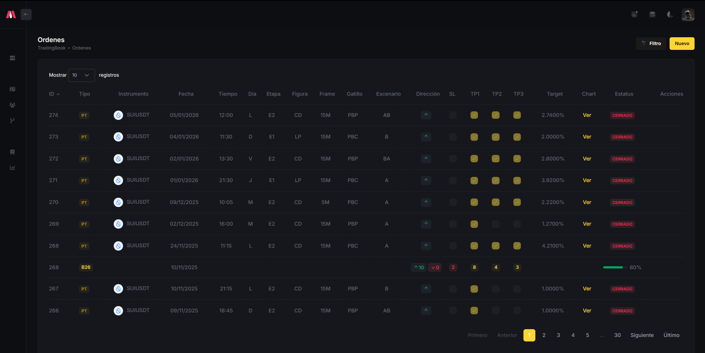
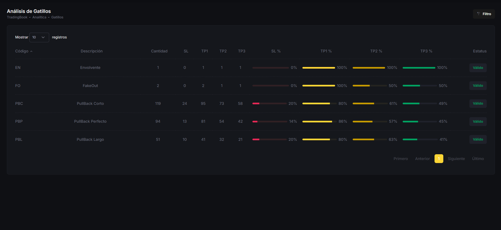
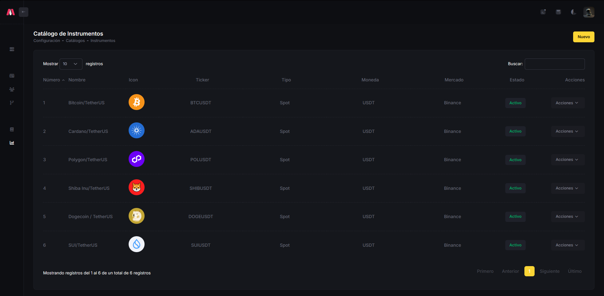

TradingBook
Plataforma web para registrar, analizar y optimizar operaciones de trading cripto mediante métricas, setups y visualización de desempeño.

TradingBook es una plataforma web orientada al análisis de performance en trading de criptomonedas. Centraliza el registro de operaciones y transforma datos operativos en métricas accionables para evaluar consistencia, detectar patrones y mejorar la toma de decisiones. Fue desarrollado con .NET 8 y Clean Architecture, con enfoque en escalabilidad, mantenibilidad y analítica de negocio.
Capacidades del sistema
Registro detallado de operaciones con instrumento, temporalidad, dirección y resultado.
Dashboard con métricas clave de desempeño y efectividad.
Análisis de setups mediante evaluación por SL, TP1, TP2 y TP3.
Seguimiento de objetivos para evaluar calidad de ejecución.
Gestión de cuentas para comparar resultados en distintos escenarios.
Catálogo configurable de instrumentos operativos.
Mi rol
Diseñé la arquitectura y estructura funcional del sistema.
Desarrollé backend, lógica de negocio y persistencia de datos en .NET 8.
Modelé el dominio orientado a métricas y análisis operativo.
Implementé la interfaz enfocada en claridad visual y experiencia analítica.
Definí funcionalidades alineadas a un caso de uso real.
Aporte del proyecto
TradingBook convierte datos operativos en información clara y accionable para evaluar desempeño, detectar patrones y mejorar la toma de decisiones.
{kind=link}

Dashboard principal con métricas de efectividad, desempeño por gatillos y balance por cuenta para monitoreo rápido del rendimiento.
{kind=link}

Módulo de órdenes para consultar operaciones registradas con filtros operativos, objetivos alcanzados y estado de ejecución.
{kind=link}

Vista analítica para evaluar la efectividad de cada gatillo según SL, TP1, TP2 y TP3, facilitando la identificación de setups más consistentes.
{kind=link}

Catálogo de instrumentos configurable para gestionar activos de trading y mantener estandarizada la información operativa del sistema.